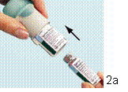
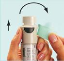

RÉSUMÉ DES CARACTÉRISTIQUES DU PRODUIT
ANSM - Mis à jour le : 22/08/2013
SPIRIVA RESPIMAT 2,5 microgrammes/dose, solution pour inhalation
2. COMPOSITION QUALITATIVE ET QUANTITATIVE
Tiotropium…………………………………………………………………….………………2,5 microgrammes
Sous forme de bromure de tiotropium monohydraté…………………………….…...3,124 microgrammes
Pour une dose délivrée
La dose délivrée correspond à la quantité de tiotropium délivré après le passage à travers l’embout buccal.
Pour la liste complète des excipients, voir rubrique 6.1.
Solution pour inhalation limpide et incolore.
4.1. Indications thérapeutiques
4.2. Posologie et mode d'administration
La cartouche ne peut être utilisée qu’avec le dispositif d’inhalation RESPIMAT (voir rubrique 4.2).
Posologie
La posologie recommandée chez l’adulte est de 5 microgrammes de tiotropium administrée à l’aide de l’inhalateur RESPIMAT, soit deux bouffées doses une fois par jour, à heure fixe dans la journée.
Ne pas dépasser la dose recommandée.
Populations particulières
Sujets âgés : le bromure de tiotropium peut être utilisé chez les sujets âgés sans adaptation de la posologie.
Insuffisance rénale : en cas d’insuffisance rénale, le bromure de tiotropium peut être utilisé sans adaptation de la posologie. En cas d’insuffisance rénale modérée à sévère (clairance de la créatinine £ 50 ml/min) voir rubriques 4.4 et 5.2.
Insuffisance hépatique : en cas d’insuffisance hépatique, le bromure de tiotropium peut être utilisé sans adaptation de la posologie.
Population pédiatrique :
BPCO : il n’y a pas de justification à l'utilisation de SPIRIVA RESPIMAT chez les enfants et les adolescents de moins de 18 ans.
Mucoviscidose : la sécurité et l’efficacité de SPIRIVA RESPIMAT n’ont pas été établies. (voir rubriques 4.4 et 5.1).
Mode d’administration
Pour une administration correcte du médicament, le médecin ou un autre professionnel de santé devra s’assurer du bon usage de l’appareil par le patient.
Instructions destinées aux patients pour l’utilisation et la manipulation
Inhalateur SPIRIVA RESPIMAT et cartouche SPIRIVA RESPIMAT
1) Insertion de la cartouche
Les étapes suivantes 1 à 6 sont nécessaires avant la première utilisation :
1. En maintenant le capuchon vert (A) fermé, appuyer sur le cliquet de sécurité (E) tout en retirant la base transparente (G).

2. Sortir la cartouche (H) de la boîte. Pousser l'extrémité la plus étroite de la cartouche dans l'inhalateur jusqu'à ce qu'elle s'enclenche.
2b
Pousser fermement le fond de la cartouche contre une surface solide afin qu’elle pénètre au maximum dans l’inhalateur.
La cartouche dépassera de l’inhalateur, la bande argentée du bas de la cartouche étant toujours visible.
Ne plus tenter de retirer la Ne plus tenter de retirer la cartouche lorsqu’elle a été insérée dans l’inhalateur.
3. Remettre en place la base transparente (G).
Ne plus retirer la base transparente
2) Préparation de l’inhalateur SPIRIVA RESPIMAT pour la première utilisation
4
4. Maintenir l'inhalateur SPIRIVA RESPIMAT verticalement, avec le capuchon vert (A) fermé. Tourner la base (G) dans la direction des flèches rouges imprimées sur l'étiquette jusqu'à entendre un déclic (un demi-tour).
5
5. Ouvrir le capuchon vert (A) jusqu'à ce qu'il s'ouvre complètement avec un claquement)
6. Diriger l'inhalateur SPIRIVA RESPIMAT en direction du sol puis appuyer sur le bouton de libération de la dose (D). Fermer le capuchon vert (A).
Répéter les étapes 4, 5 et 6 jusqu'à ce qu'un nuage soit visible.
Puis répéter les étapes 4, 5 et 6 trois autres fois afin d'assurer que l'inhalateur est prêt à être utilisé.
L’inhalateur SPIRIVA RESPIMAT est maintenant prêt à l'emploi.
Ces étapes n'affecteront pas le nombre de doses disponibles. Après cette préparation, l’inhalateur SPIRIVA RESPIMAT pourra délivrer 60 bouffées (correspondant à 30 jours de traitement.)
 Utilisation quotidienne de l'inhalateur SPIRIVA RESPIMAT
Utilisation quotidienne de l'inhalateur SPIRIVA RESPIMAT
L'inhalateur sera utilisé UNE SEULE FOIS PAR JOUR.
A chaque utilisation, prendre DEUX BOUFFÉES.
I
I. Maintenir l'inhalateur SPIRIVA RESPIMAT en position verticale, avec le capuchon vert (A) fermé, afin d'éviter la libération accidentelle d'une dose. Tourner la base (G) dans la direction des flèches rouges imprimées sur l'étiquette jusqu'à entendre un déclic (un demi-tour).
II
II. Ouvrir le capuchon vert (A) jusqu'à ce qu'il s'ouvre complètement (avec un claquement.) Expirer lentement et complètement, puis fermer les lèvres autour de l'extrémité de l’embout buccal sans recouvrir les prises d'air (C). Diriger l’ inhalateur SPIRIVA RESPIMAT vers le fond de la gorge.
Prise d’air
Tout en prenant une inspiration lente et profonde par la bouche, appuyer
sur le bouton de libération de la dose (D), et continuer d'inspirer lentement
aussi longtemps que possible. Retenir sa respiration pendant 10 secondes ou
aussi longtemps que cela est possible sans être gêné.
III. Répéter les étapes I et II afin de recevoir la quantité recommandée de médicament (2 bouffées).
Il n’est nécessaire d’utiliser cet inhalateur qu’UNE SEULE FOIS PAR JOUR.
Fermer le capuchon vert jusqu’à l’utilisation suivante de l’inhalateur SPIRIVA RESPIMAT.
Si l’inhalateur SPIRIVA RESPIMAT n’a pas été utilisé pendant plus de 7 jours, libérer une bouffée vers le sol.
Si l’inhalateur SPIRIVA RESPIMAT n’a pas été utilisé pendant plus de 21 jours, reprendre les étapes 4 à 6 jusqu’à ce qu’un nuage soit visible. Puis, répéter les étapes 4 à 6 trois autres fois.
Quand se procurer un nouvel inhalateur SPIRIVA RESPIMAT ?
L'inhalateur SPIRIVA RESPIMAT contient 60 bouffées (correspondant à 30 jours de traitement). L'indicateur de doses montre approximativement la quantité de médicament restant dans l’inhalateur. Lorsque l'indicateur entre dans la zone rouge de l'échelle, il reste suffisamment de médicament pour environ sept jours de traitement (14 bouffées). C'est le moment où le patient devra renouveler la prescription pour un nouvel inhalateur SPIRIVA RESPIMAT.
Lorsque l'indicateur de doses atteint la fin de l'échelle rouge (c'est-à-dire que l'ensemble des 60 bouffées auront été administrées), l'inhalateur SPIRIVA RESPIMAT est vide et se bloque automatiquement. A ce stade, la base ne peut plus être tournée.
L’inhalateur SPIRIVA RESPIMAT doit être jeté au plus tard après trois mois d’utilisation, même si la totalité du médicament n’a pas été utilisée.
Comment entretenir l’inhalateur ?
Nettoyer l’embout buccal, y compris la partie métallique à l’intérieur de l’embout buccal, avec un linge ou un tissu humide uniquement, au moins une fois par semaine.
Une décoloration mineure de l’embout buccal n’affecte pas les performances de l’inhalateur SPIRIVA RESPIMAT.
Le cas échéant, essuyer l’extérieur de l’inhalateur SPIRIVA RESPIMAT avec un linge humide.
SPIRIVA RESPIMAT est contre-indiqué chez les patients présentant une hypersensibilité au bromure de tiotropium, à l'atropine ou à ses dérivés, par exemple l'ipratropium ou l'oxitropium ou à l'un des excipients (voir rubrique 6.1).
4.4. Mises en garde spéciales et précautions d'emploi
Des réactions d’hypersensibilité immédiate peuvent survenir après l’administration du bromure de tiotropium, solution pour inhalation.
En raison de son activité anticholinergique, le bromure de tiotropium doit être utilisé avec prudence en cas de glaucome à angle fermé, d'hypertrophie de la prostate ou de rétrécissement du col de la vessie.
D’une façon générale, l’administration par voie inhalée des médicaments est susceptible de déclencher un bronchospasme.
SPIRIVA RESPIMAT devra être utilisé avec prudence chez les patients ayant un trouble du rythme cardiaque connu (voir rubrique 5.1).
Les concentrations plasmatiques de bromure de tiotropium augmentent en cas d’altération de la fonction rénale ; par conséquent, chez les patients atteints d'insuffisance rénale modérée à sévère (clairance de la créatinine £ 50 ml/min), le produit ne sera utilisé que si le bénéfice attendu dépasse le risque potentiel. A ce jour, il n'y a pas d'expérience à long terme chez les patients souffrant d'insuffisance rénale sévère (Voir rubrique 5.2).
Il conviendra d’avertir les patients du risque de déclenchement ou d’aggravation d'un glaucome à angle fermé, de douleur ou gêne oculaire, de vision floue transitoire avec halo visuel coloré associé à une rougeur et un œdème cornéo-conjonctival, en cas de projection intraoculaire du produit. Si une combinaison quelconque de ces symptômes oculaires apparaît, les patients doivent interrompre l’utilisation du bromure de tiotropium et consulter immédiatement un spécialiste.
La sécheresse buccale observée avec les traitements anticholinergiques en général, peut à long terme favoriser la survenue de caries dentaires.
La posologie du bromure de tiotropium ne doit pas dépasser une prise par jour (voir rubrique 4.9).
SPIRIVA RESPIMAT n’est pas recommandé dans le traitement de la mucoviscidose. En cas d’utilisation chez des patients atteints de mucoviscidose, SPIRIVA RESPIMAT peut augmenter les signes et symptômes de la mucoviscidose (par exemple : événements indésirables graves, exacerbations pulmonaires, infections des voies respiratoires).
4.5. Interactions avec d'autres médicaments et autres formes d'interactions
La co-administration de bromure de tiotropium avec d'autres médicaments à activité anticholinergique n'a pas été étudiée et n’est par conséquent, pas recommandée.
Il n’y a pas de données cliniques documentées relatives à l’exposition de la femme enceinte au bromure de tiotropium.
Les études de reproduction menées chez l’animal ont montré un effet toxique sur la reproduction associé à une toxicité maternelle (voir rubrique 5.3).
Le risque potentiel chez l’Homme est inconnu. SPIRIVA RESPIMAT ne doit par conséquent être administré au cours de la grossesse qu’en cas d’indication justifiée.
L’excrétion du bromure de tiotropium dans le lait maternel n’a pas été établie. Bien que les études réalisées chez les rongeurs n’aient retrouvé une excrétion du bromure de tiotropium dans le lait maternel qu’en faibles quantités, l’utilisation de SPIRIVA RESPIMAT n’est pas recommandée au cours de l’allaitement. Le bromure de tiotropium est un composé de longue durée d’action. La décision de poursuivre ou d’interrompre l’allaitement ou le traitement par SPIRIVA RESPIMAT doit être prise en tenant compte du bénéfice de l’allaitement chez l’enfant et du bénéfice du traitement par SPIRIVA RESPIMAT chez la mère.
Fertilité
Aucune donnée clinique sur la fertilité n’est disponible avec le tiotropium. Une étude animale réalisée avec du tiotropium n’a pas montré d’effets indésirables sur la fertilité (voir rubrique 5.3).
4.7. Effets sur l'aptitude à conduire des véhicules et à utiliser des machines
Un grand nombre des effets indésirables rapportés peuvent être attribués aux propriétés anticholinergiques du bromure de tiotropium.
Tableau résumé des effets indésirables
Les fréquences des effets indésirables présentés ci-dessous sont basées sur les taux d’incidence brute des effets indésirables observés dans le groupe traité par le tiotropium (2802 patients) (c’est-à-dire les événements imputables au tiotropium), regroupés à partir des données de 5 études cliniques contrôlées contre placebo dont les durées de traitement étaient comprises entre 12 semaines et 1 an.
La fréquence est définie selon la classification conventionnelle :
Très fréquent (≥1/10 ; fréquent (≥1/100 à <1/10) ; peu fréquent (≥1/1000 à <1/100) ; rare (≥1/10 000 à <1/1000) ; très rare (<1/10 000) ; non déterminé (fréquence ne pouvant être estimée sur la base des données disponibles).
|
Classe d'organes/Terme MedDRA recommandé |
Fréquence |
|
|
Troubles du métabolisme et de la nutrition |
|
|
|
Déshydratation |
Non déterminée |
|
|
Troubles du système nerveux |
|
|
|
Etourdissements |
Peu fréquent |
|
|
Céphalées |
Peu fréquent |
|
|
Insomnies |
Non déterminée |
|
|
Troubles oculaires |
|
|
|
Vision trouble |
Rare |
|
|
Augmentation de la pression intraoculaire |
Rare |
|
|
Glaucome |
Rare |
|
|
Troubles cardiaques |
|
|
|
Palpitations |
Peu fréquent |
|
|
Tachycardie supraventriculaire |
Peu fréquent |
|
|
Fibrillation auriculaire |
Peu fréquent |
|
|
Tachycardie |
Peu fréquent |
|
|
Troubles respiratoires, thoraciques et médiastinaux |
|
|
|
Toux |
Peu fréquent |
|
|
Pharyngite |
Peu fréquent |
|
|
Dysphonie |
Peu fréquent |
|
|
Bronchospasme |
Rare |
|
|
Epistaxis |
Peu fréquent |
|
|
Sinusite |
Non déterminée |
|
|
Laryngite |
Rare |
|
|
Troubles gastro-intestinaux |
|
|
|
Sécheresse buccale |
Fréquent |
|
|
Candidose oropharyngée |
Peu fréquent |
|
|
Reflux gastro-œsophagien |
Rare |
|
|
Dysphagie |
Peu fréquent |
|
|
Caries dentaires |
Rare |
|
|
Gingivite |
Rare |
|
|
Glossite |
Rare |
|
|
Stomatite |
Rare |
|
|
Constipation |
Peu fréquent |
|
|
Occlusion intestinale, y compris iléus paralytique |
Non déterminée |
|
|
Nausées |
Non déterminée |
|
|
Troubles cutanés et du tissu sous-cutané, Troubles du système immunitaire |
|
|
|
Prurit |
Peu fréquent |
|
|
Œdème de Quincke |
Rare |
|
|
Eruption cutanée |
Peu fréquent |
|
|
Infection cutanée/ulcération cutanée |
Rare |
|
|
Sécheresse cutanée |
Rare |
|
|
Urticaire |
Rare |
|
|
Hypersensibilité (y compris réactions immédiates) |
Non déterminée |
|
|
Troubles musculosquelettiques et systémique |
|
|
|
Gonflement articulaire |
Non déterminé |
|
|
Troubles rénaux et des voies urinaires |
|
|
|
Dysurie |
Peu fréquent |
|
|
Rétention d’urine |
Peu fréquent |
|
|
Infection urinaire |
Rare |
|
Description de certains effets indésirables :
Dans les essais cliniques contrôlés, les effets indésirables les plus fréquemment observés ont été les effets indésirables de type anticholinergiques tels que la sécheresse buccale survenue chez environ 3,2% des patients.
Dans 5 essais cliniques, la sécheresse buccale a été à l’origine de 3 arrêts de traitement parmi 2802 patients traités par le tiotropium (soit 0,1% des patients traités).
Les effets indésirables graves liés aux effets anticholinergiques incluent : glaucome, constipation, occlusion intestinale y compris iléus paralytique et rétention urinaire.
Autres populations particulières
L’incidence des effets anticholinergiques peut augmenter avec l’âge.
Déclaration des effets indésirables suspectés
La déclaration des effets indésirables suspectés après autorisation du médicament est importante. Elle permet une surveillance continue du rapport bénéfice/risque du médicament. Les professionnels de santé déclarent tout effet indésirable suspecté via le système national de déclaration : Agence nationale de sécurité du médicament et des produits de santé (ANSM) et réseau des Centres Régionaux de Pharmacovigilance - Site internet : www.ansm.sante.fr
Cependant, l'inhalation d'une dose unique allant jusqu’à 340 microgrammes de bromure de tiotropium n'a été suivie d'aucun effet indésirable de type anticholinergique systémique chez des volontaires sains. En outre, aucun effet indésirable significatif, hormis une sécheresse buccale, pharyngée ou nasale, n’a été observé après 14 jours d’administration de doses atteignant 40 microgrammes de bromure de tiotropium solution pour inhalation chez des volontaires sains, à l’exception d’une réduction prononcée de la production de salive à partir du 7ème jour.
Une intoxication aiguë par ingestion orale accidentelle de tiotropium solution pour inhalation à partir de la cartouche est peu probable compte tenu de sa faible biodisponibilité par voie orale.
5. PROPRIETES PHARMACOLOGIQUES
5.1. Propriétés pharmacodynamiques
Code ATC : R03B B04
Mécanisme d’action
Le bromure de tiotropium est un antagoniste spécifique de longue durée d’action des récepteurs muscariniques, qui montre une affinité similaire pour les sous-types de récepteurs muscariniques M1 à M5. Dans les voies aériennes, le bromure de tiotropium se fixe de façon compétitive et réversible sur les récepteurs M3 des muscles lisses bronchiques, et inhibe les effets cholinergiques (bronchonconstriction) de l’acétylcholine, entraînant ainsi une relaxation des muscles lisses bronchiques. L’effet est dose-dépendant et persiste plus de 24 heures. Anticholinergique de type ammonium quaternaire, le bromure de tiotropium exerce une action topique (bronchique) sélective lorsqu’il est administré par inhalation, et offre ainsi une marge thérapeutique acceptable avant l’apparition des effets anticholinergiques systémiques.
Effets pharmacodynamiques
La dissociation du tiotropium des récepteurs M3 notamment est très lente, lui conférant une demi-vie de dissociation significativement plus longue que l’ipratropium. Le tiotropium se dissocie plus rapidement des récepteurs M2 que des récepteurs M3, comme le suggèrent les études in vitro, marquant une sélectivité plus importante (exprimée de façon cinétique) pour les récepteurs de type M3 par rapport à M2.
La forte activité, la très lente dissociation des récepteurs et la sélectivité topique de l’administration par inhalation se traduisent sur le plan clinique par une bronchodilatation significative et prolongée chez les patients atteints de BPCO.
Données d’efficacité et sécurité clinique dans le traitement de la BPCO
Le programme de développement clinique de phase III de SPIRIVA RESPIMAT a été composé de plusieurs études randomisées et en double aveugle (2 études d’un an, 2 études de 12 semaines et 2 études de 4 semaines) portant sur 2 901 patients atteints de BPCO (1 038 recevant la dose de 5 µg de tiotropium). Le développement sur un an a été composé de deux essais contrôlés contre placebo. Les 2 études de 12 semaines consistaient en la comparaison du traitement actif (ipratropium) contre placebo. L’ensemble des 6 études a comporté des mesures de la fonction pulmonaire. Les deux études d’un an ont inclus les mesures de la dyspnée, de la qualité de vie relative à l’état de santé et la survenue des exacerbations. Dans ces études, le tiotropium solution pour inhalation, administré une fois par jour, a apporté des améliorations significatives de la fonction pulmonaire (volume expiratoire maximum par seconde et capacité vitale forcée) dans un délai de 30 minutes suivant la première dose, par rapport au placebo (amélioration moyenne du VEMS à 30 minutes : 0,113 litres ; intervalle de confiance IC à 95% : 0,102 à 0,125 litres, p< 0,0001). A l’état d’équilibre, l’amélioration de la fonction pulmonaire a été maintenue pendant 24 heures, par rapport au placebo (amélioration moyenne du VEMS: 0,122 litres ; IC95% : 0,106 à 0,138 litres, p< 0,0001). L’état d’équilibre pharmacodynamique a été atteint en une semaine.
SPIRIVA RESPIMAT a significativement amélioré, comparativement au placebo, le débit expiratoire de pointe (DEP) mesuré quotidiennement par les patients, (amélioration moyenne du DEP le matin : 22 l/min ; IC95% : 18 à 55 l/min, p< 0,0001 ; le soir 26 l/min ; IC95% : 23 à 30 l/min, p<0,0001). L’utilisation de SPIRIVA RESPIMAT a entraîné une réduction de l’utilisation du traitement bronchodilatateur de secours par rapport au placebo (réduction moyenne de 0,66 prise par jour, IC95% : 0,51 à 0,81 prise par jour, p < 0,0001).
L’effet bronchodilatateur de SPIRIVA RESPIMAT s’est maintenu pendant une période de 12 mois d’administration sans signe d’induction d’une tolérance.
Les résultats cliniques suivants ont été mis en évidence au cours d’études à long terme d’une durée d’un an :
(a) SPIRIVA RESPIMAT a amélioré de façon significative la dyspnée (évaluée par l’index de dyspnée de transition) comparativement au placebo (amélioration moyenne de 1,05 unités ; IC95% : 0,73 à 1,38 unités, p<0,0001). Cette amélioration s’est maintenue pendant toute la période de traitement.
(b)L’amélioration du score total moyen de la Qualité de vie évalué par les patients eux-mêmes au moyen du questionnaire respiratoire de St George, (SGRQ) obtenue avec SPIRIVA RESPIMAT à la fin des deux études d’un an a été de 3,5 unités par rapport au placebo (IC95% : 2,1 à 4,9, p<0,0001). Une diminution de 4 unités est considérée comme cliniquement significative.
(c) Exacerbations de BPCO
Dans trois études cliniques randomisées d’une durée d’un an, conduites en double aveugle, contre placebo, le traitement par SPIRIVA RESPIMAT a entraîné une réduction significative du risque d’exacerbations de BPCO par rapport au placebo. Les exacerbations de BPCO ont été définies de la façon suivante : « association d’au moins deux événements ou symptômes respiratoires persistants pendant au moins 3 jours et ayant conduit à un traitement spécifique (prescription d’antibiotiques et/ou de corticostéroïdes systémiques et/ou modification significative du traitement à visée respiratoire) ».
Le traitement par SPIRIVA RESPIMAT a entraîné une réduction du risque d’hospitalisations en relation avec une exacerbation de BPCO (statistiquement significatif dans l’étude qui présente la puissance appropriée). L’analyse combinée de deux études de phase III et l’analyse distincte d’une étude supplémentaire sur les exacerbations sont présentées dans le Tableau 1. Tous les traitements à visée respiratoire, à l’exception des anticholinergiques et des ß-mimétiques d’action prolongée, étaient autorisés en traitements concomitants, consistant en ß-mimétiques d’action rapide, corticostéroïdes inhalés et xanthines. Les ß-mimétiques d’action prolongée ont été autorisés en traitement complémentaire dans l’étude sur les exacerbations.
Tableau 1 : Analyse statistique des exacerbations de BPCO et des exacerbations de BPCO ayant nécessité une hospitalisation chez les patients présentant une BPCO modérée à très sévère :
|
Etude |
Critère |
SPIRIVA |
Placebo |
% de réduction du risque (IC à 95 %)a |
Valeur de p |
|
|
Analyse combinée de 2 études de phase III d'un an d |
Nombre de jours avant la première exacerbation de BPCO |
160a |
86a |
29 |
< 0,0001b |
|
|
(670, 653) |
Incidence moyenne d'exacerbations par patient-année |
0,78c |
1,00c |
22 |
0,002c |
|
|
Délai avant la première exacerbation de BPCO ayant nécessité une hospitalisation |
|
|
25 |
0,20b |
||
|
Incidence moyenne d'exacerbations ayant nécessité une hospitalisation par patient-année |
0,09c |
0,11c |
20 |
0,096c |
||
|
Etude sur les exacerbations de phase III b d'un an |
Nombre de jours avant la première exacerbation de BPCO |
169a |
119a |
31 |
< 0,0001b |
|
|
(1939, 1953) |
Incidence moyenne d'exacerbations par patient-année |
0,69c |
0,87c |
21 |
< 0,0001c |
|
|
Délai avant la première exacerbation de BPCO ayant nécessité une hospitalisation |
|
|
27 |
0,003b |
||
|
Incidence moyenne des exacerbations ayant nécessité une hospitalisation par patient-année |
0,12c |
0,15c |
19 (7 à 30)c |
0,004c |
a Délai avant le premier événement: nombre de jours sous traitement écoulés avant que 25 % des patients présentent au moins une exacerbation de BPCO /hospitalisation pour exacerbation de BPCO. Dans l'étude A, 25 % des patients sous placebo ont présenté une exacerbation au jour 112 alors que 25 % des patients traités par SPIRIVA RESPIMAT ont présenté une exacerbation au jour 173 (p= 0,09). Dans l'étude B, 25 % des patients sous placebo ont présenté une exacerbation au jour 74 alors que 25 % des patients traités par SPIRIVA RESPIMAT 2,5 microgrammes/dose, solution pour inhalation ont présenté une exacerbation au jour 149 (p< 0, 0001).
b Les risques relatifs ont été estimés avec un modèle aléatoire proportionnel de Cox. La réduction du risque exprimé en pourcentage est calculée avec la formule suivante : 100 (1 - risque relatif).
c Régression de Poisson. La réduction du risque est calculée avec la formule suivante : 100 (1 - rapport des taux).
d Le regroupement pour l’analyse des données était prévu initialement. Les paramètres mesurant les exacerbations ont été significativement améliorés dans l’analyse séparée des 2 études de un an.
Dans une analyse rétrospective groupée des données issues des trois études contrôlées de un an et d’une étude de 6 mois conduites avec SPIRIVA RESPIMAT versus placebo, ayant inclus 6 096 patients, une augmentation des chiffres de mortalité toutes causes confondues a été observée chez les patients traités par SPIRIVA RESPIMAT (n=68 ; Incidence : 2,64 cas pour 100 patients-années) par rapport au placebo (51 ; incidence : 1,98), correspondant à un ratio de 1,33 [IC à 95% 0,93 à 1,92] dans la période de traitement programmée ; l’excès de mortalité a été observé chez les patients présentant des antécédents connus de troubles du rythme cardiaque.
Population pédiatrique
Bronchopneumopathie chronique obstructive (BPCO) :
L’Agence européenne des médicaments a accordé une dérogation à l’obligation de soumettre les résultats d’études réalisées avec SPIRIVA RESPIMAT dans tous les sous-groupes de la population pédiatrique dans le cadre du traitement de la BPCO (voir rubrique 4.2 pour les informations concernant l’usage pédiatrique).
Données d'efficacité et sécurité clinique dans le traitement de la mucoviscidose
Le programme de développement clinique dans la mucoviscidose incluait 3 études multicentriques chez 959 patients âgés de 5 mois et plus. Les patients âgés de moins de 5 ans utilisaient une chambre d’inhalation (AeroChamber Plus®) munie d’un masque et étaient inclus uniquement pour une évaluation de la sécurité. Les deux études pivots (une étude de phase II de recherche de dose et une étude de phase III) comparaient les effets de SPIRIVA RESPIMAT (tiotropium 5 µg : 469 patients) par rapport au placebo (315 patients) sur la fonction pulmonaire (VEMS exprimé en pourcentage des valeurs prédites ASC0-4h (Aire sous la courbe), et VEMS résiduel) pendant la période de 12 semaines, randomisée, en double aveugle ; l’étude de phase III incluait de plus une phase d'extension en ouvert d'étude à long terme pouvant aller jusqu’à 12 mois. Dans ces études, tous les traitements à visée respiratoire, à l’exception des anticholinergiques, étaient autorisés comme traitement concomitant, notamment les béta-2 agonistes à longue durée d’action, les mucolytiques et les antibiotiques.
Les effets sur la fonction pulmonaire sont présentés dans le tableau 2. Aucune amélioration significative des symptômes et de l’état de santé (évaluation des exacerbations à l’aide du RSSQ (questionnaire sur les symptômes respiratoires et systémiques) et de la qualité de vie à l’aide du questionnaire de qualité de vie dans la mucoviscidose (CFQ, Cystic Fibrosis Questionnaire) n’a été observée.
Tableau 2 : Valeurs absolues des différences moyennes des variations après 12 semaines par rapport à la valeur initiale, ajustée en fonction du placebo.
|
|
Phase II |
Phase III |
||||
|
Population globale (NSpiriva = 176, Nplacebo = 168) |
Population globale (NSpiriva = 293, Nplacebo = 147) |
Age ≤ 11 ans |
Age ≥ 12 ans |
|||
|
(NSpiriva = 95, Nplacebo = 47) |
(NSpiriva = 198, Nplacebo = 100) |
|||||
|
moyenne (IC95%) |
Valeur de p |
moyenne (IC95%) |
Valeur de p |
moyenne (IC95%) |
moyenne (IC95%) |
|
|
VEMS ASC0-4h (% de la valeur théorique)a Valeur absolue de la variation |
3,39 (1,67; 5,12) |
<0,001 |
1,64 (-0,27 ; 3,55) |
0,092 |
-0,63 (-4,58 ; 3,32) |
2,58 (0,50 ; 4,65) |
|
VEMS ASC0-4h (litres) Valeur absolue de la variation |
0,09 (0,05; 0,14) |
<0,001 |
0,07 (0,02; 0,12) |
0,010 |
0,01 (-0,07 ; 0,08) |
0,10 (0,03 ; 0,17) |
|
VEMS résiduel (% de la valeur theorique)a Valeur absolue de la variation |
2,22 (0,38; 4,06) |
0,018 |
1,40 -0,50; 3,30 |
0,150 |
-1,24 (-5,20 ; - 271) |
2,56 (0,49 ; 4,62) |
|
VEMS résiduel (litres) Valeur absolue de la variation |
0,06 (0,01; 0,11) |
0,028 |
0,07 (0,02; 0,12) |
0,012 |
-0,01 (-0,08; 0,06) |
0,10 (0,03; 0,17) |
a Critères d’évaluation principaux
Tous les effets indésirables liés au médicament observés dans les études dans la mucoviscidose sont des effets indésirables connus du tiotropium (voir rubrique 4.8). Les événements indésirables considérés comme liés au médicament les plus fréquemment observés pendant les 12 semaines de traitement en double aveugle étaient la toux (4,1%) et la sécheresse buccale (2,8%).
Le nombre et le pourcentage de patients ayant rapporté des événements indésirables (EI) à prendre en considération spécifiquement dans la mucoviscidose quel que soit le lien de causalité sont présentés dans le tableau 3. Les signes et symptômes considérés comme des manifestations de la mucoviscidose ont augmenté en nombre avec le tiotropium, en particulier chez les patients ≤ 11 ans, bien que la différence ne soit pas statistiquement significative.
Tableau 3 : Pourcentage de patients avec des effets indésirables à prendre en compte spécifiquement dans la mucoviscidose quel que soit le lien de causalité, par groupes d’âge, durant les 12 semaines de traitement (Phase II et Phase III regroupées)
|
|
Age ≤11 ans |
Age ≥12 ans |
||
|
|
Nplacebo=96 |
NSpiriva=158 |
Nplacebo=215 |
NSpiriva=307 |
|
Douleur abdominale |
7,3 |
7,0 |
5,1 |
6,2 |
|
Constipation |
1,0 |
1,9 |
2,3 |
2,6 |
|
Syndrome d’occlusion distale de l‘intestin |
0,0 |
0,0 |
1,4 |
1,3 |
|
Infections du tractus respiratoire |
34,4 |
36,7 |
28,4 |
28,3 |
|
Augmentation des crachats |
1,0 |
5,1 |
5,6 |
6,2 |
|
Exacerbations |
10,4 |
14,6 |
18,6 |
17,9 |
"Syndrome d’occlusion distale de l‘intestin" et "Augmentation des crachats" sont des termes préférentiels de MedDRA. "Infections du tractus respiratoire" est le groupe de terme de haut niveau de MedDRA. "Douleur abdominale", "Constipation" et "Exacerbations" sont un ensemble de termes préférentiels de MedDRA.
Trente quatre (10,9%) des patients randomisés dans le groupe placebo et 56 (12,0%) des patients randomisés dans le groupe SPIRIVA RESPIMAT ont présenté un événement indésirable grave.
L’Agence européenne des médicaments a accordé une dérogation à l’obligation de soumettre les résultats d’études réalisées avec SPIRIVA RESPIMAT dans le sous-groupe de la population pédiatrique de moins de 1 an.
5.2. Propriétés pharmacocinétiques
Le bromure de tiotropium est un ammonium quaternaire non chiral peu soluble dans l’eau. Il est présenté sous forme de solution pour inhalation administrée par l’intermédiaire du dispositif d’inhalation RESPIMAT. Approximativement 40 % de la dose inhalée est déposée dans les poumons, l’organe cible, le reste étant déposé dans le tractus gastro-intestinal. Certaines des données pharmacocinétiques indiquées ci-dessous ont été obtenues avec des doses supérieures à la posologie thérapeutique recommandée.
b) Caractéristiques pharmacocinétiques générales de la substance active après l’administration de la spécialité
Absorption : après inhalation de la solution chez de jeunes volontaires sains, les données concernant l’excrétion urinaire suggèrent qu’approximativement 33 % de la dose inhalée atteint la circulation systémique. En raison de la structure chimique du produit (ammonium quaternaire) et compte tenu des résultats des expérimentations in vitro, l’absorption digestive attendue du bromure de tiotropium (10 – 15%) est faible. La biodisponibilité absolue des solutions orales de bromure de tiotropium est de 2 à 3%. À l’équilibre, les concentrations plasmatiques maximales de bromure de tiotropium chez les patients souffrant de BPCO ont été de 10,5-11,7 pg/ml 10 minutes après l’administration d’une dose de 5 microgrammes délivrée par l’inhalateur RESPIMAT, pour diminuer rapidement selon un modèle à compartiments multiples. Les concentrations plasmatiques minimales à l’équilibre ont été de 1,49-1,68 pg/ml. La prise d'aliments n’est pas censée influer l'absorption de cet ammonium quaternaire.
Distribution : la liaison du bromure de tiotropium aux protéines plasmatiques est de 72 % et son volume de distribution est de 32 l/kg. On ne connaît pas les concentrations locales pulmonaires, mais le mode d'administration laisse penser qu'elles sont beaucoup plus élevées. Les études chez le rat ont montré que le bromure de tiotropium ne traverse pas la barrière hémato-encéphalique de façon significative.
Métabolisme : le métabolisme du bromure de tiotropium est faible. Chez de jeunes volontaires sains, l'excrétion urinaire de la substance non métabolisée atteint 74 % de la dose après une administration intraveineuse. L'ester du bromure de tiotropium est clivé, indépendamment d’un mécanisme enzymatique, en un dérivé alcool (N-méthylscopine) et un dérivé acide (acide dithiénylglycolique), inactifs sur les récepteurs muscariniques. Les études réalisées in vitro sur des microsomes hépatiques et des hépatocytes d'origine humaine montrent qu'une petite partie supplémentaire (< 20% de la dose administrée par voie intraveineuse) est métabolisée par une réaction d'oxydation dépendante du cytochrome P450 (CYP) puis par conjugaison avec le glutathion, donnant naissance à une série de métabolites de phase II.
Les études in vitro effectuées sur des microsomes hépatiques suggèrent une inhibition du métabolisme par les inhibiteurs du CYP 2D6 (et 3A4), la quinidine, le kétoconazole et le gestodène. Les iso-enzymes CYP 2D6 et 3A4 sont donc impliquées pour une part dans le métabolisme. Il n’a pas été mis en évidence d’effet inhibiteur, même avec des concentrations élevées, sur les iso-enzymes CYP 1A1, 1A2, 2B6, 2C9, 2C19, 2D6, 2E1 ou 3A sur les microsomes hépatiques humains.
Elimination : la demi-vie d'élimination terminale du bromure de tiotropium est comprise entre 5 et 6 jours après inhalation. La clairance totale a été de 880 ml/min après une dose intraveineuse chez de jeunes volontaires sains, avec une variabilité interindividuelle de 22%. Le bromure de tiotropium administré par voie intraveineuse est essentiellement éliminé par voie urinaire sous forme inchangée (74%). Après inhalation de la solution, l’excrétion urinaire est comprise entre 20,1 et 29,4 % de la dose, le reste étant principalement constitué de médicament non absorbé dans l’intestin puis éliminé dans les fèces. La clairance rénale du bromure de tiotropium est plus élevée que la clairance de la créatinine, reflétant une sécrétion urinaire.
Linéarité / non-linéarité : le bromure de tiotropium montre des propriétés pharmacocinétiques linéaires dans l’intervalle thérapeutique après une administration intraveineuse, une inhalation de poudre sèche et une inhalation de la solution.
c) Caractéristiques pharmacocinétiques dans des populations particulières:
Sujet âgé: comme pour les médicaments excrétés majoritairement par voie rénale, la clairance rénale du bromure de tiotropium diminue avec l'âge (326 ml/min chez des sujets atteints de BPCO de moins de 58 ans contre 163 ml/min chez des patients atteints de BPCO de plus de 70 ans), ce qui peut s’expliquer par la diminution physiologique de la fonction rénale avec l’âge. Après inhalation, l'excrétion urinaire de bromure de tiotropium diminue de 14% (jeunes volontaires sains) à environ 7% chez des patients atteints de BPCO. Toutefois, les concentrations plasmatiques ne varient pas significativement en fonction de l'âge chez des patients atteints de BPCO, si on compare les variations inter- et intra-individuelles (augmentation de 43% de l’AUC0-4h après inhalation sous forme de poudre).
Insuffisance rénale : comme avec tous les autres médicaments principalement excrétés par voie rénale, l'insuffisance rénale s'accompagne d'une augmentation des concentrations plasmatiques du médicament et d'une diminution de sa clairance rénale, tant après perfusion intraveineuse qu'après inhalation sous forme de poudre. L’existence d'une insuffisance rénale légère (CLCR 50-80 ml/min), souvent observée chez le sujet âgé, n'augmente que légèrement les concentrations plasmatiques de bromure de tiotropium (augmentation de 39% de l’AUC0-4h après perfusion intraveineuse). Chez les patients atteints de BPCO et présentant une insuffisance rénale modérée à sévère (CLCR <50 ml/min), les concentrations plasmatiques de bromure de tiotropium ont été doublées (augmentation de 82% de l’AUC0-4h) après l'administration intraveineuse du médicament. Ce phénomène a été confirmé par la mesure des concentrations plasmatiques après inhalation sous forme de poudre mais également après une inhalation de solution par l’inhalateur RESPIMAT.
Insuffisance hépatique : il n’est pas attendu de modification significative de la pharmacocinétique du bromure de tiotropium en cas d’insuffisance hépatique, dans la mesure où le produit est essentiellement éliminé par voie rénale (74 % chez le jeune volontaire sain) et métabolisé par simple clivage non enzymatique des liaisons esters en produits pharmacologiquement inactifs.
Pédiatrie : Le programme de développement dans la bronchopneumopathie chronique obstructive (BPCO) ne comprenait pas l'étude des patients pédiatriques (voir rubrique 4.2). Les patients pédiatriques ont été étudiés dans le cadre du programme clinique dans la mucoviscidose qui comprenait également des adultes.
Après une inhalation de 5 µg de tiotropium, la concentration plasmatique de tiotropium chez les patients âgés de 5 ans et plus atteints de mucoviscidose était de 10,1 pg/ml à l’état d’équilibre 5 minutes après l’administration et a ensuite diminué rapidement. La fraction de dose disponible chez les patients de moins de 5 ans atteints de mucoviscidose ayant utilisé la chambre d’inhalation munie d'un masque facial était environ 3 à 4 fois plus faible que celle observée chez les patients atteints de mucoviscidose âgés de 5 ans et plus. Chez les patients de moins de 5 ans atteints de mucoviscidose, le niveau d'exposition systémique au tiotropium était fonction du poids corporel.
d) Relation(s) entre paramètres pharmacocinétiques et paramètres pharmacodynamiques
Il n'y a pas de relation directe entre les paramètres pharmacocinétiques et la pharmacodynamie du produit.
5.3. Données de sécurité préclinique
Chez l'animal, ont ainsi été observées une diminution de la consommation de nourriture, une réduction de la prise de poids, une sécheresse buccale et nasale, une réduction de la sécrétion de larmes et de salive, une mydriase et une augmentation du rythme cardiaque. D'autres effets notables ont été observés lors des études de toxicité en administration répétée : légère irritation du tractus respiratoire chez le rat et la souris, se manifestant par une rhinite et des altérations de l'épithélium de la cavité nasale et du larynx, et prostatite avec dépôts de substances de type protéinique et lithiases vésicales chez le rat.
Les mêmes modifications pharmacologiques directes et indirectes ainsi que des rhinites ont été observées dans les études de toxicité en doses répétées chez les jeunes rats exposés du 7ème jour après la naissance jusqu’à leur maturité sexuelle. Aucune toxicité systémique et aucun effet toxicologique significatif sur les paramètres principaux du développement de la trachée ou des organes vitaux n’ont été constatés.
Des effets délétères sur la gestation, le développement embryo-foetal, la parturition ou le développement post-natal n’ont été observés qu'à des doses toxiques pour les mères.
Le bromure de tiotropium n'a pas induit d'effets tératogènes chez le rat et le lapin. Dans une étude de la reproduction et de la fertilité chez le rat, aucun effet indésirable n’a été observé sur la fertilité ou l'accouplement chez les parents et leur descendance aux doses administrées.
Les effets sur l'appareil respiratoire (irritation) et uro-génital (prostatite), ainsi que des effets délétères sur la reproduction ont été observés après administration locale ou systémique de doses cinq fois supérieures à la dose thérapeutique. Les études de génotoxicité et de carcinogenèse n’ont pas révélé de risque particulier pour l’Homme.
Edétate disodique
Eau purifiée
Acide chlorhydrique à 3,6 % (pour l'ajustement du pH)
Après insertion de la cartouche dans l'inhalateur: 3 mois.
6.4. Précautions particulières de conservation
6.5. Nature et contenu de l'emballage extérieur
Présentations des dispositifs:
Boîte unique: un inhalateur RESPIMAT et une cartouche de 60 doses.
Boîte double: 2 boîtes uniques, chacune contenant un inhalateur RESPIMAT et une cartouche de 60 doses.
Boîte triple: 3 boîtes uniques, chacune contenant un inhalateur RESPIMAT et une cartouche de 60 doses.
Boîte octuple: 8 boîtes uniques, chacune contenant un inhalateur RESPIMAT et une cartouche de 60 doses.
Toutes les présentations peuvent ne pas être commercialisées.
6.6. Précautions particulières d’élimination et de manipulation
7. TITULAIRE DE L’AUTORISATION DE MISE SUR LE MARCHE
BOEHRINGER INGELHEIM INTERNATIONAL GMBH
BINGER STRASSE 173
d-55216 INGELHEIM AM RHEIN
ALLEMAGNE
8. NUMERO(S) D’AUTORISATION DE MISE SUR LE MARCHE
· 571 505-7 ou 34009 571 505 7 0: 60 doses en cartouche (PE/Polypropylène) avec inhalateur; boîte de 2.
· 571 506-3 ou 34009 571 506 3 1: 60 doses en cartouche (PE/Polypropylène) avec inhalateur; boîte de 3.
· 571 508-6 ou 34009 571 508 6 0: 60 doses en cartouche (PE/Polypropylène) avec inhalateur; boîte de 8.
9. DATE DE PREMIERE AUTORISATION/DE RENOUVELLEMENT DE L’AUTORISATION
[à compléter par le titulaire]
10. DATE DE MISE A JOUR DU TEXTE
[à compléter par le titulaire]
Sans objet.
12. INSTRUCTIONS POUR LA PREPARATION DES RADIOPHARMACEUTIQUES
Sans objet.
Liste I.